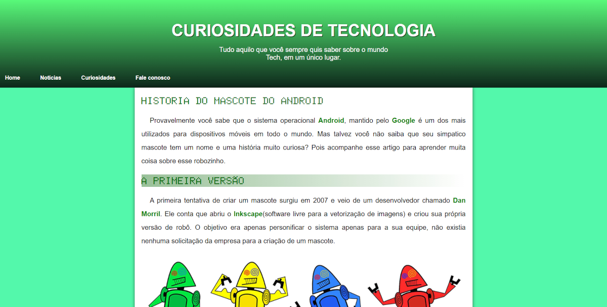
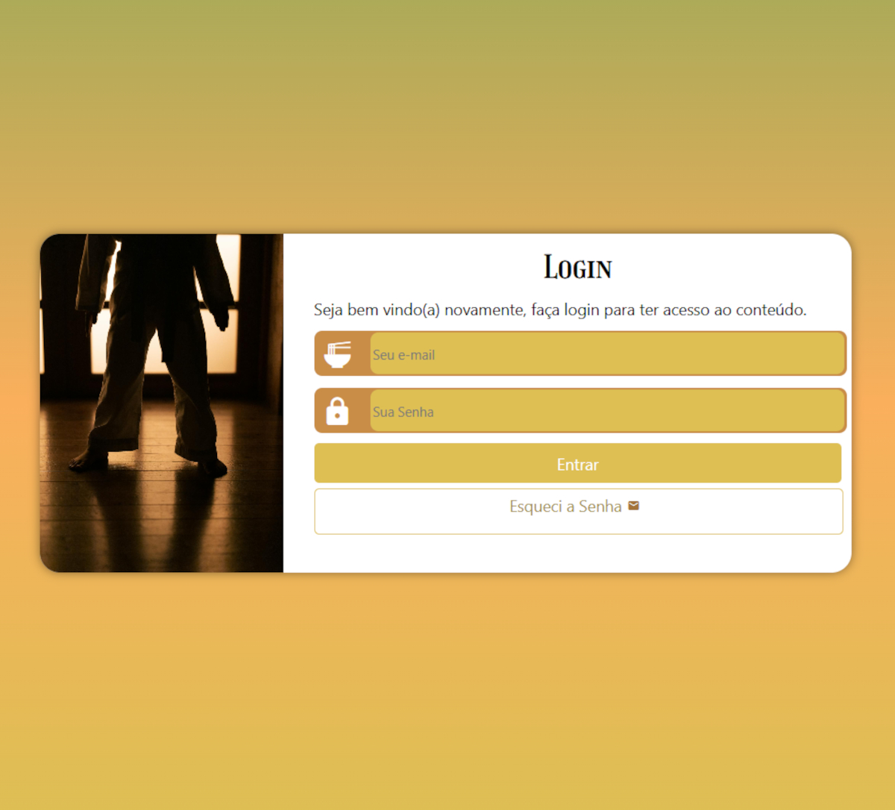

Víctor de Olivera
Atualmente cursando Sistemas de informação, com o foco em me tornar um desenvolvedor Full Stack. Apaixonado pela tecnologia e sempre em busca de novos desafios. Hoje, trabalho como auxiliar administrativo na Rota Transportes.
Minhas Skills
HTML5
90%
CSS3
80%
JavaScript
15%
Python
60%
Comunicação
80%
Adaptabilidade
100%
Liderança
70%
Trabalho em equipe
90%
Formação
01/06/2024 -
UNIFTC (UNEX)
Bacharelado em Sistemas de Informação
Projetos

2025
Projeto de Vídeos
Projeto construído para treinar a inserção de vídeos em um site
Saiba mais...
Ao clicar na imagem, cada uma levará o usuário uma nova pagina do site em que será possível assistir ao vídeo incorporado.

2025
Projeto Cordel
Projeto construído para treinar efeito paralax em imagens
Saiba mais...
Com o efeito paralax, é possível deixar uma pagina web esteticamente adequada para um cordel.

2025
Projeto Android
Projeto construído para treinar Conteúdos e imagens dinâmicas.
Saiba mais...
Apresentação da história fascinante de como surgiu o Android. Aqui foram utilizadas várias técnicas de níveis iniciais para tornar um pequeno site responsivo e estético.

2025
Projeto Redes Sociais
Projeto construído para treinar o uso de Iframes.
Saiba mais...
Meio criativo de dilvulgar minhas redes sociais. O usuário será levado a paginas que disponibilizarão um preview da mesma.

2025
Projeto Tela de Login
Projeto construído para treinar o uso de formulários e técnicas de responsividade.
Saiba mais...
Tela de login do que seria um site para praticantes de judô.